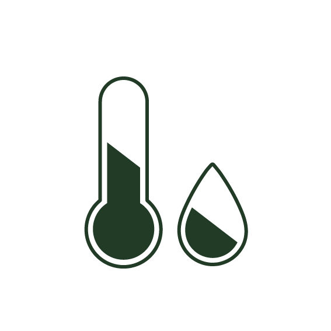

Drácula orquídea
Las Orquideas Draculas siempre han sido una de las flores más estimadas en toda la historia. Y es que cuentan con una gran belleza, fragancia y un amplia variedad de tonalidades que las convierten en la forma ideal para demostrarle a un ser querido cuanto lo apreciamos y transmitir mensajes repletos de sentimientos sin tener que decir tan solo una palabra. Por eso y mucho más es una de las flores que más usan en las floristerías y es muy frecuente encontrarla en mercados de cualquier ciudad.
La Orquidea Dracula común que conocemos nace de arbustos espinosos, la planta a la que pertenece es el Orquideaumis Draculalis. Podemos confirmarte que en su género existen muchas especies distintas, se diferencian por el color, el pétalo y el tamaño del capullo de la flor. Dependiendo del color de Orquidea Dracula que te regalen el significado varía:
- Orquidea Dracula roja: significa pasión, amor. Se suele regalar sobre todo para parejas.
- Orquidea Dracula verde: esperanza. Aunque es raro encontrar Orquideas Draculas verdes, si te las regalan simbolizará que algo bueno vendrá.
- Orquidea Dracula amarilla: este color es alegre, simboliza la alegría, una buena amistad. Es el color perfecto para felicitar a alguna persona especial.
- Orquidea Dracula azul: si te han regalado una flor azul simboliza la pureza o la buena amistad. El azul es un color calmado,sosegado que refleja también la madurez.
- Orquidea Dracula blanca: pureza, inocencia, armonía o paz. Son perfectas para demostrar un cariño incondicional o regalarlas por la llega de un bebé a la familia.
- Orquidea Dracula naranja: son Orquidea Draculas muy rompedoras, las flores naranjas son alegres, te regalan positividad y fuego a la vez. Suele ser regaladas entre amistades muy fuertes.
Cuidados:
Las Orquidea Draculas son flores de clima cálido, así que se recomienda tenerlas en un lugar en donde pueda tener regularmente exposición al sol procurar no tenerla por mucho tiempo en temperaturas menores a los 15 grados.
Las Orquidea Draculas no requieren de agua constantemente. Por lo general, se recomienda usar el método del goteo para evitar que las flores desarrollen hongos por exceso de agua. En el caso de tener Orquidea Draculas en macetas, el riego debe ser diario, sin que la planta termine inundad
Cuando el Orquidea Draculal ya haya dado sus primeras Orquidea Draculas se debe tener cuidado para poder cortarlas. Una manipulación excesiva solo ocasionará que la flor se estropee. Además se recomienda mantener alejados a los niños o mascotas por las espinas del Orquidea Draculal.
Tras esto, y ya en invierno, opta por realizar una poda completa de tu Orquidea Draculal. Esto quiere decir que deberás cortar la madera seca y las ramas improductivas para mantener el ciclo de la flor. Recuerda que la poda se debe realizar por encima de la yema. Se recomienda que el corte se realice en un ángulo de 45 grados.
Curiosidades:
1. Hay más de 30.000 variedades de Orquidea Draculas.
Y es que hay más de 30.000 variedades de Orquidea Dracula a lo largo y ancho del mundo. Una cifra que no deja de crecer año tras año, con la incorporación de un centenar de nuevas tipologías.
2. La Orquidea Dracula del desierto.
Quizá no sea exactamente una de las curiosidades sobre las Orquidea Draculas pero guarda relación con ellas. Se trata de un mineral, nombrado así por su aspecto (una acumulación láminas de yeso cristalizado que se juntan en forma de Orquidea Dracula) y procedencia (desiertos).
3. La Orquidea Dracula más cara del mundo.
Considerada como una de las flores más elegantes y hermosas del mundo, la Orquidea Dracula Juliet es conocida como la flor de los 15.8 millones de dólares. Esta flor fue introducida en el mercado en el año 2006, en una exhibición de flores llevada a cabo en Chelsea, Londres.
Su creador, David Austin, invirtió 15 años de su vida y unos 6 millones de dólares en el proceso de creación. Hoy en día, el precio varía según la ubicación, disponibilidad y calidad, pero en promedio un ramo de 12 Orquidea Draculas puede costar entre 70€ y 200€.
4. La Orquidea Dracula existe desde hace mucho tiempo.
Este dato se basa en el hecho de que en Florissan (Colorado) se encontró una Orquidea Dracula fósil, que tenía 35 millones de años .
Algunas noticias que te pueden interesar

El cambio climático amenaza a 771 especies de plantas y líquenes en peligro de extinción
Todas las plantas y líquenes incluidos en la lista de especies en peligro de extinción de la Ley de Especies Amenazadas son sensibles al cambio climático.

Cuando la magia del naranjo convierte el jardín en un paraíso
En Córdoba, los entornos idílicos repletos de naranjos amargos se disfrutan en palacios, casas y calles, o incluso en la propia mezquita, cuyo vergel es uno de los más antiguos de toda Europa.